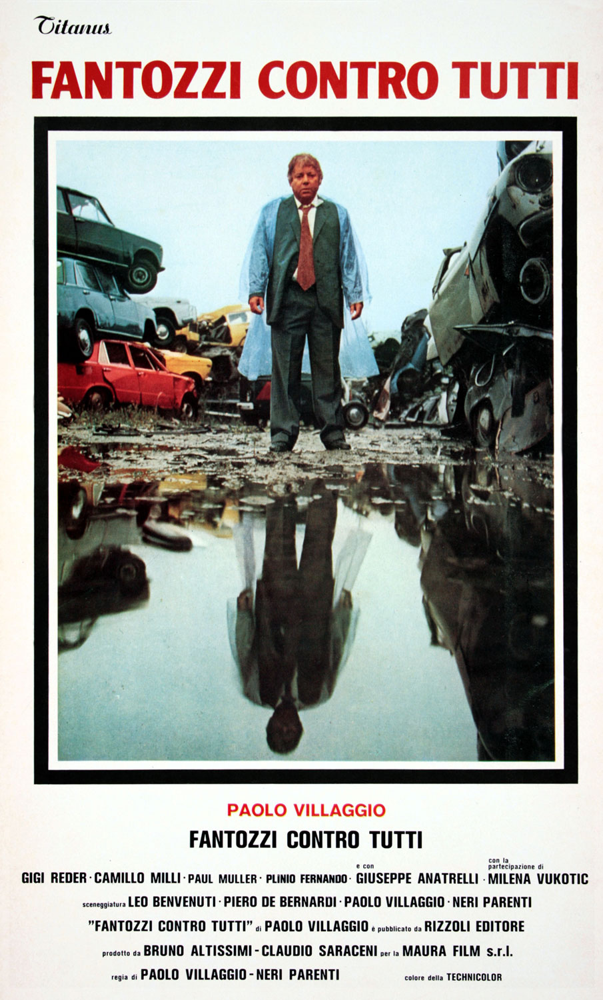

Fantozzi contro tutti is an Italian comedy film, released in 1980) is the third film in the saga of the unlucky clerk Ugo Fantozzi, played by its creator, Paolo Villaggio. It is the first movie in which Fantozzi's wife, Pina, is played by Milena Vukotic. It is also the last film apparition of Giuseppe Anatrelli, one year before his death.
